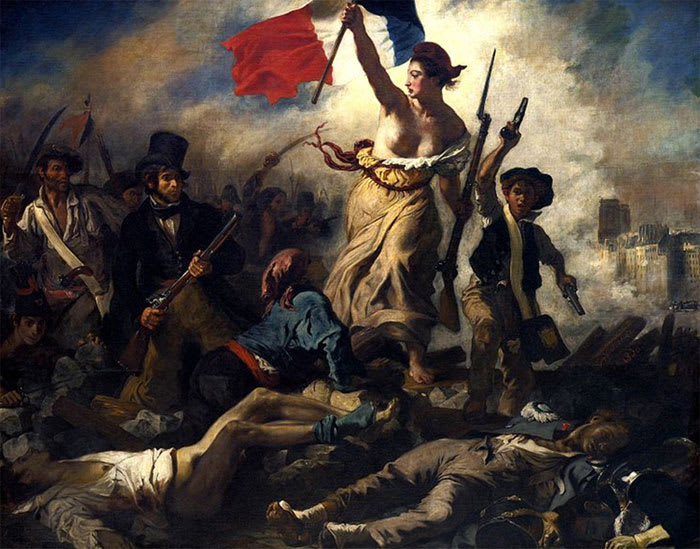

תוצרי הפרוייקט :
היצירה המקורית :
היצירה לאחר אינטרפטציה :

למעוניינים לקרוא עוד :
השראה לתהליך :
את ההשראה לפרויקט קיבלנו ממחאת הנשים שנערכה בישראל ב-4 בדצמבר 2018 .
במחאה על אלימות נגד נשים בישראל,
בעקבות רצח של 24 נשים בשנת 2018 עד לזמן תחילת המחאה.
קשיים בתהליך :
הקושי הראשון בתהליך היה בבחירת יצירת האומנות שעליה נעשה את הפרויקט.
לאחר בחירת היצירה המקורית החלטנו לצלם את היצירה שלנו בכיכר רבין,
לטובת כך רצינו לגייס נשים שיצטלמו בכיכר ויעזרו לנו ליצור את היצירה שלנו,
.עקב תנאי מזג האוויר נתקלנו בקושי לצלם את הרעיון המקורי והיינו צריכות לחשוב מחדש איך אנו מעצבות את התמונה בתנאים הקיימים.